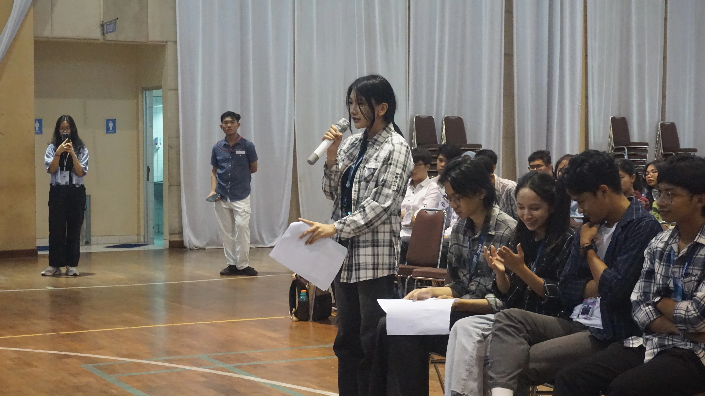
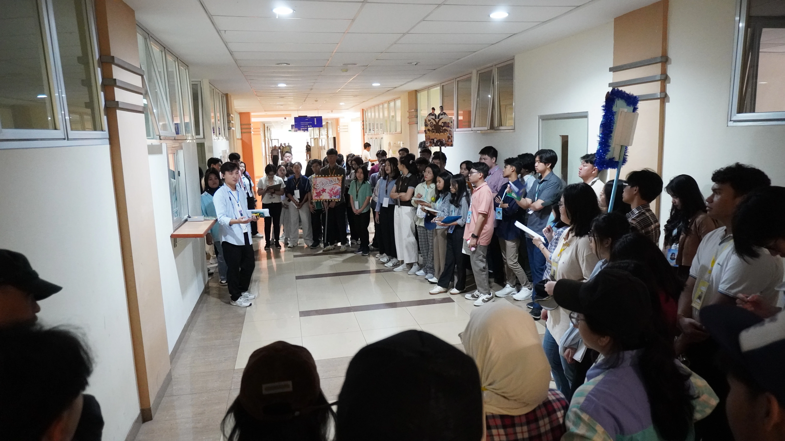
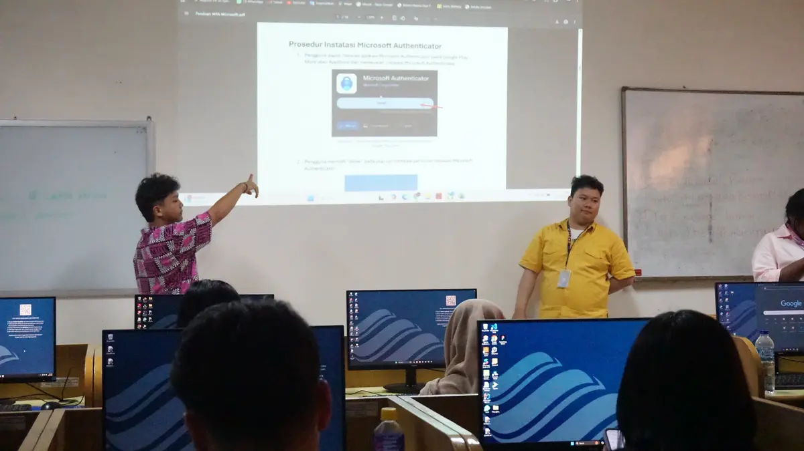
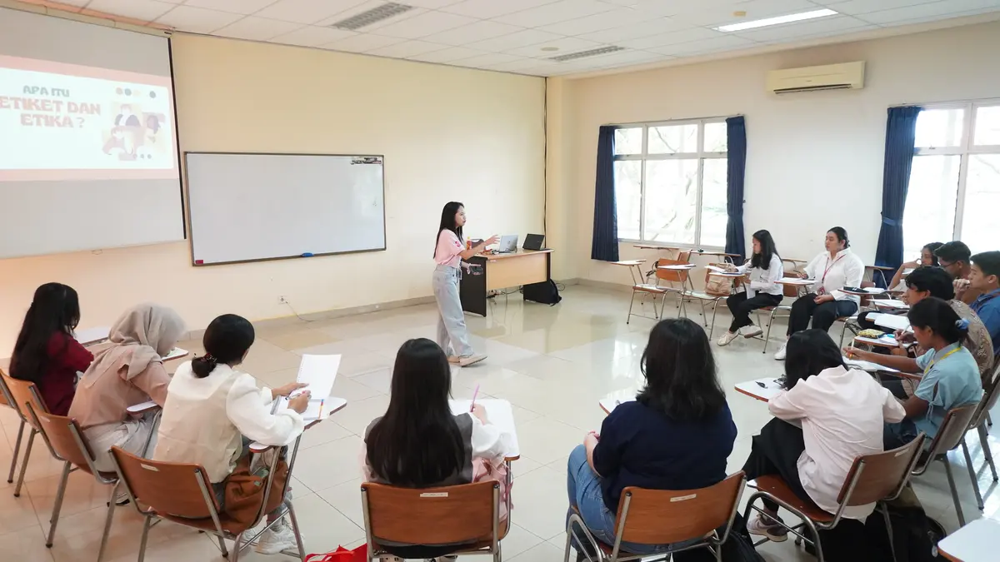
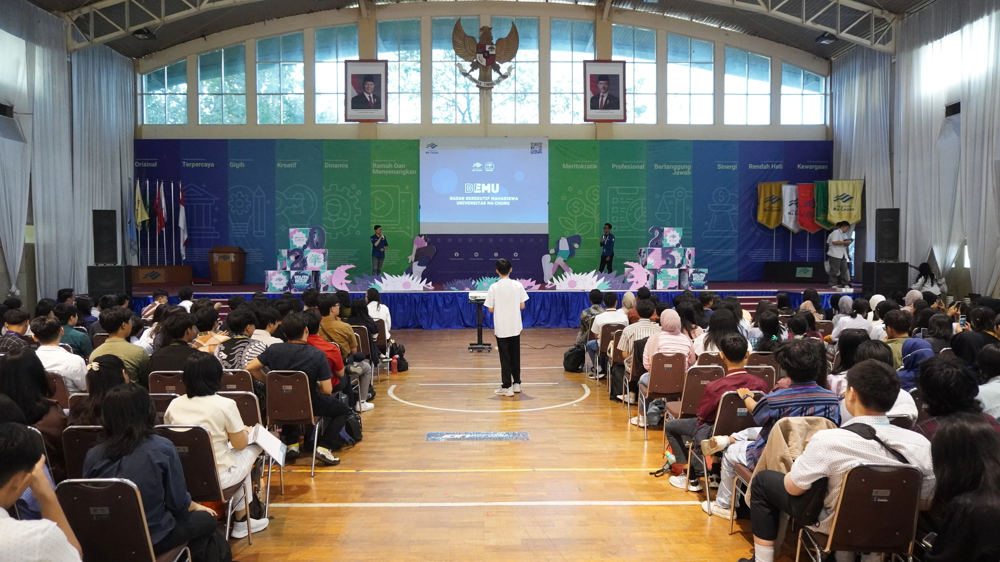

14 Agustus 2025
Parent's Day
Orang tua mahasiswa baru diajak berkeliling kampus, bertemu dosen, dan mendapat gambaran tentang kehidupan kuliah di Ma Chung.
14 Agustus 2025
Department Fair
Mengunjungi stand setiap program studi, berbincang dengan dosen dan mahasiswa senior, serta melihat karya dan hasil studi dari masing-masing jurusan.


15 Agustus 2025
17-an
Perayaan 17 Agustus bersama seluruh warga kampus, dengan berbagai lomba dan makan siang bersama.
16 Agustus 2025
Krida
Sesi diskusi dan kegiatan bertema keamanan kampus, penanganan kekerasan seksual, dan toleransi antar sesama mahasiswa.


16 Agustus 2025
Ma Chung Race
Menjelajahi unit dan komunitas kampus melalui permainan seru yang mengajak peserta berkeliling area Ma Chung.
17 Agustus 2025
Study Skills
Pengenalan sistem akademik Ma Chung: MAC IS, email kampus, dan berbagai perangkat yang akan digunakan selama masa kuliah.


19 Agustus 2025
OBOR
Sesi refleksi diri sebagai bagian dari orientasi nilai-nilai Universitas Ma Chung.
21 Agustus 2025
LK Days
Pengenalan UKM dan organisasi kemahasiswaan di Ma Chung. Bagi yang tertarik, pendaftaran dapat dilakukan langsung di sini.


22 Februari 2026
Inaugurasi
Malam penutupan MCF. Mahasiswa baru tampil di panggung, dilengkapi penampilan dari guest star.